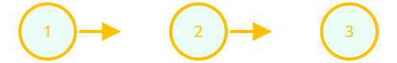
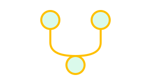
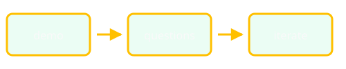
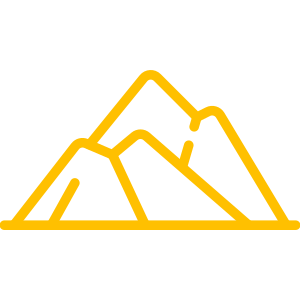
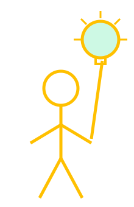
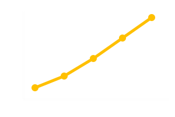

From Uploads to Impact: Improving Discovery with a CNG Default
CNG Forum · Thu Oct 8, 2026 · 3:19 PM MDT · Ballroom 1
Earth Genome
Earth Genome
From uploads
to impact
with a CNG default
In cloud-native geospatial we often talk about large-scale—even global—datasets.
Practitioners on the front lines of climate change and conservation usually work more locally, with data they already own.
Discovery often starts here
Reference layers teams upload—not a brand-new global feed.

User-uploaded reference layers
A real feature in a product practitioners use every day.

Why PMTiles was our default
Portable tiles, HTTP range reads, fits the cloud-native stack we already trust.
What we chose not to build first
A heavier traditional upload → tile → serve architecture.

Cloud-native standards over custom plumbing
Ecosystem defaults turned a harder engineering path into a simple, high-value ship.
Less time on plumbing · More time on impact
One slide · one idea · 15 seconds
(Seven minutes on stage—keep the pacing tight.)

Upload → store → discover on the map
(Add product screenshots or a short GIF here.)
PMTiles in one sentence
A single file of vector tiles, read with HTTP range requests—no tile server required for the happy path.

Smaller scope, same pattern
Local reference layers teach the same cloud-native habits as global delivery—at a scale teams feel immediately.
Stand on ecosystem defaults
PMTiles · object storage · clients that already speak the spec
Reuse before you invent.

Better discovery → better decisions on the ground

The problem
Teams already have critical context in local layers—but it is hard to find and use next to everything else in the platform.
The big idea
Treat PMTiles as the default upload format and skip the heavy custom tiling pipeline.
Live demo
Walk through uploading a reference layer and seeing it in discovery workflows.

Results
Faster delivery, less ops surface area, and practitioners spending time on impact—not plumbing.
Links
Less plumbing. More impact.
Brad Andrick · Earth Genome
(applause time!)